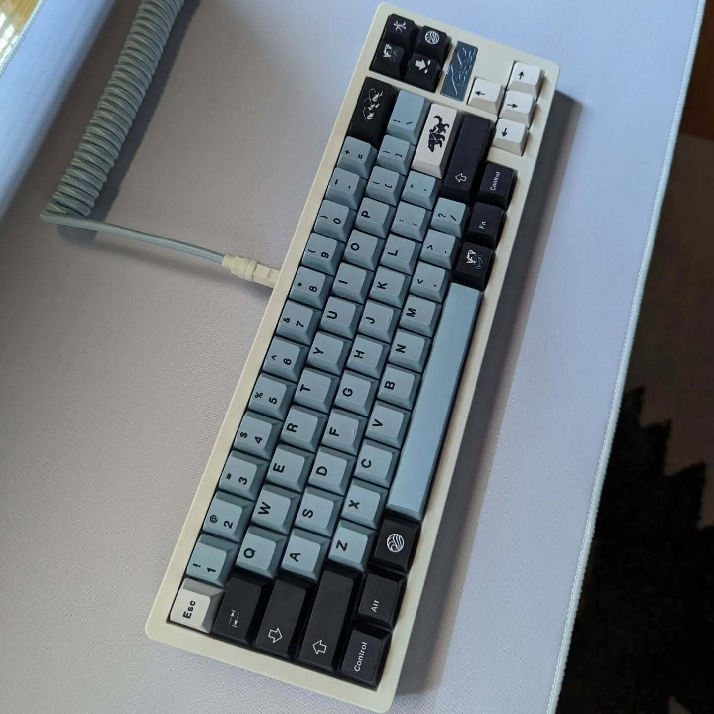
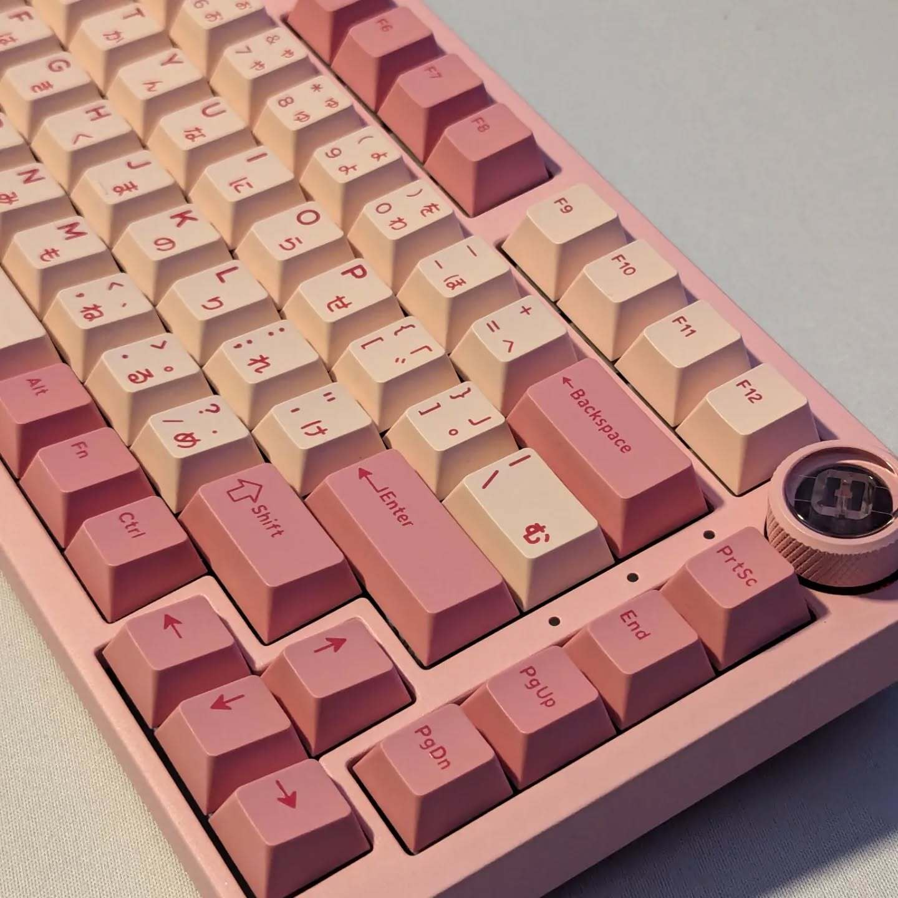
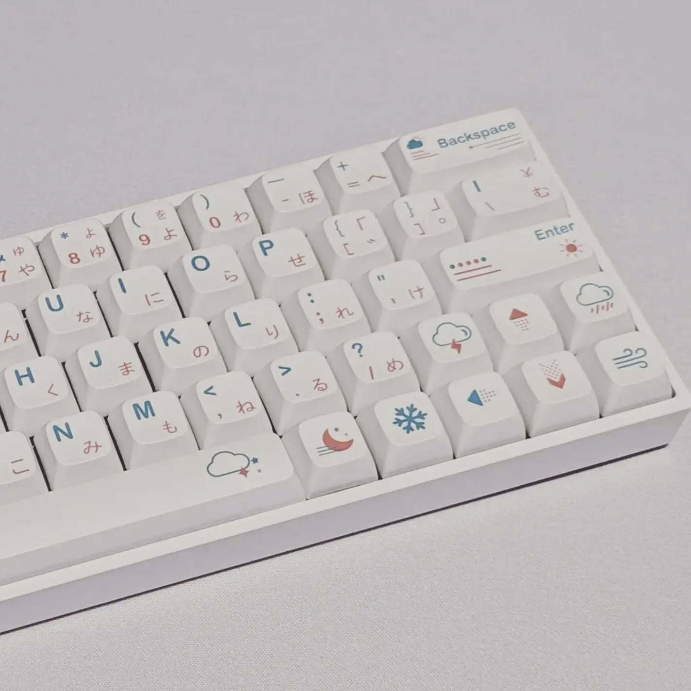

I love building keyboards! These are part of my collection or for clients in beautiful 1440p resolution!
I theme each keyboard with a client's favorite character, season, or color!

Zeal Sakurio Silent Switches
This is my personal keyboard! I themed it off one of my favorite artists with her signature blue.

CK Meow Switches
The definition of this keyboard is pink, and it turned out really nice. The switches give a "thock" sound that is satisfying to type on.

Gazzew Boba U4T Switches
This client wanted the theme to be based off a character that deals with wind and clouds, so the keycap set I got was perfect for this!